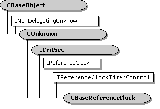

description: The CBaseReferenceClock class implements a reference clock. ms.assetid: 898e1968-a9ab-4bb9-abf0-943bfae502e2 title: CBaseReferenceClock class (Refclock.h) ms.topic: reference ms.date: 4/26/2023 topic_type:
[The feature associated with this page, DirectShow, is a legacy feature. It has been superseded by MediaPlayer, IMFMediaEngine, and Audio/Video Capture in Media Foundation. Those features have been optimized for Windows 10 and Windows 11. Microsoft strongly recommends that new code use MediaPlayer, IMFMediaEngine and Audio/Video Capture in Media Foundation instead of DirectShow, when possible. Microsoft suggests that existing code that uses the legacy APIs be rewritten to use the new APIs if possible.]

The CBaseReferenceClock class implements a reference clock.
| Protected Member Variables | Description |
|---|---|
| m_pSchedule | CAMSchedule object that handles scheduling tasks for the clock. |
| Protected Methods | Description |
| ~CBaseReferenceClock | Destructor method. |
| Public Methods | Description |
| CBaseReferenceClock | Constructor method. |
| GetPrivateTime | Retrieves the real time from the clock. |
| SetTimeDelta | Adjusts the internal clock time. |
| GetSchedule | Retrieves a pointer to the clock's scheduling object. |
| TriggerThread | Wakes up the worker thread that handles scheduling. |
| IReferenceClock Methods | Description |
| GetTime | Retrieves the current reference time. |
| AdviseTime | Creates a one-shot advise request. |
| AdvisePeriodic | Creates a periodic advise request. |
| Unadvise | Removes a pending advise request. |
| IReferenceClockTimerControl Methods | Description |
| GetDefaultTimerResolution | Returns the current resolution of the reference clock's timer. |
| SetDefaultTimerResolution | Sets the resolution of the reference clock's timer. |
| Helper Functions | Description |
| ConvertToMilliseconds | Converts a reference time to milliseconds. |
This class implements a reference clock that supports the IReferenceClock and IReferenceClockTimerControl interfaces. If a filter can provide a reference clock for the filter graph for example, by accessing a hardware device it can use this class to implement the clock.
The CBaseReferenceClock object maintains two distinct time values:
It is valid for the internal clock to run backward over brief periods. For example, if the clock drifts forward, the filter can adjust it backward. (See CBaseReferenceClock::SetTimeDelta.) The GetTime method uses the time values reported by GetPrivateTime. However, the reference time is monotonically increasing; in other words, it never runs backward. Therefore, if the internal clock runs backward, GetTime continues to report the old time until the internal clock catches up.
For example, the two methods might return the following sequences:
GetPrivateTime: 105, 106, 103, 104, 105, 106, 107, 108
GetTime: 105, 106, 106, 106, 106, 106, 107, 108
On the third clock tick, the internal clock jumps backward to 103. The GetTime method continues to report 106 until the internal clock catches up.
By default, GetPrivateTime returns the system time, through a call to the timeGetTime function. A filter that is providing a reference clock from an external device can do one of the following:
This class uses a CAMSchedule object to handle scheduling of advise requests. For details, see the documentation for the CAMSchedule class.
| Requirement | Value |
|---|---|
| Header | Refclock.h (include Streams.h) |
| Library | Strmbase.lib (retail builds); Strmbasd.lib (debug builds) |